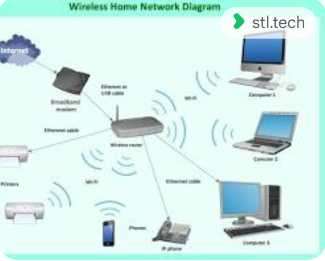
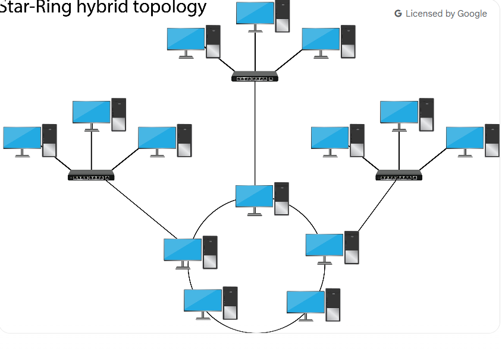
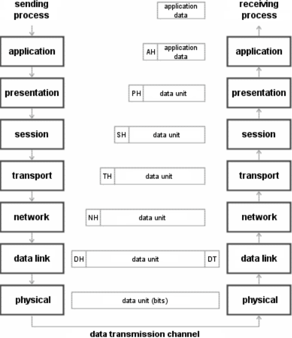
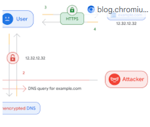

My Learning Journey - Networking
From fundamental concepts to practical applications in network administration and security.
← Back to PortfolioDay 1
NetworkingIntroduction to Networking
This day covered the basics of **data communication and networking**. I learned about the core components—sender, receiver, medium, and protocol—and the characteristics of data communication, such as speed and reliability. We also explored different types of communication (**simplex, half-duplex, full-duplex**) and data transmission (**analog and digital signals**).
Topics Covered:
- Data Communication and Networking: What they are and their importance.
- Core Components: Sender, receiver, medium, and protocol.
- Characteristics of Data Communication: Speed, accuracy, and reliability.
- Types of Communication: Simplex, half-duplex, and full-duplex.
- Types of Data Transmission: Analog and digital signals.
Day 2
NetworkingNetwork and Data Types
This session explored different network types and data classifications. We defined what a network is and distinguished between various types, including **LAN, WAN, MAN, and PAN**. We also covered fundamental networking concepts and the classifications of data: **oriented, observed, and inferred**.
Topics Covered:
- Definition of a Network.
- Types of Networks: LAN, WAN, MAN, and PAN.
- Networking Concepts: Fundamental ideas and their importance.
- Types of Data: Oriented, observed, and inferred.
Day 3
NetworkingThe OSI Model
This day focused on the **OSI (Open Systems Interconnection) Model**, which explains how data moves through seven layers. I learned the function of each layer—**Physical, Data Link, Network, Transport, Session, Presentation, and Application**—and saw examples of the protocols that operate at each level. This model is a cornerstone of networking theory.
Topics Covered:
- The seven layers: Physical, Data Link, Network, Transport, Session, Presentation, and Application.
- Understanding each layer's function in networking.
- Examples of protocols at each layer.
Day 4
NetworkingHTTP Methods & Domain Name System (DNS)
This session covered web communication and the DNS for resolving addresses. I learned about the common **HTTP Methods** (**GET, POST, PUT, and DELETE**) that are used to interact with web servers. We also explored the crucial role of **DNS** in translating human-readable domain names into IP addresses, a process fundamental to how the internet works.

Topics Covered:
- HTTP Methods: GET, POST, PUT, and DELETE.
- DNS: Its role and function.
- How browsers use HTTP and DNS to load web pages.
Day 5
NetworkingTest on OSI Model and DHCP
This day began with a comprehensive review and test of the **OSI Model** to solidify my understanding. Afterward, we moved on to a new protocol: **DHCP (Dynamic Host Configuration Protocol)**. I learned the concept of dynamic IP address assignment and how it allows devices to automatically get an IP address when connecting to a network, simplifying network administration.
Topics Covered:
- Review of OSI Model layers.
- Introduction to DHCP (Dynamic Host Configuration Protocol).
- The concept of dynamic IP address assignment.
- Understanding how dynamic IP addressing works.
Day 6
NetworkingDHCP Acknowledge, ARP & ICMP
This session covered several key protocols used for network communication and diagnostics. I learned the final step of the DHCP process, the **Acknowledge** message. We also explored **ARP (Address Resolution Protocol)**, which is vital for mapping IP addresses to physical MAC addresses on a local network, and **ICMP (Internet Control Message Protocol)**, a tool used for sending network error messages and diagnostics like the 'ping' command.

Topics Covered:
- DHCP Acknowledge: How a server confirms IP address assignment.
- ARP (Address Resolution Protocol): Maps IP addresses to MAC addresses.
- ICMP (Internet Control Message Protocol): Sends network error messages and diagnostics (e.g., ping).
Day 7
ProjectProject Submission
The final day was dedicated to applying all the concepts I learned throughout the week. I submitted my "Batchit website" project, which served as a practical demonstration of my new skills. The day concluded with a mentor review and valuable feedback on the project, allowing me to see how networking principles tie into real-world applications.

Topics Covered:
- Submission of the Batchit website project.
- Mentor review and feedback.
- Application of networking concepts in the project.